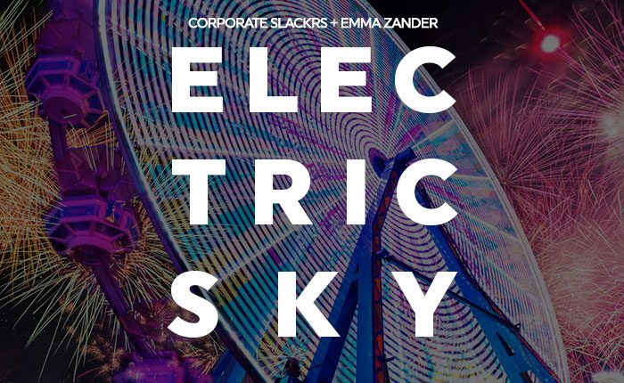

Corporate Slackrs Channel the “Electric Sky” of EDC Las Vegas With New Single on Insomniac Records


Among the standouts from this year’s EDC Las Vegas 2017 Compilation was the undoubtedly large “Electric Sky,” a tune penned by Florida duo Corporate Slackrs, featuring angelic vocals from Emma Zander and energy powerful enough to earn support from Tiësto himself. Now, getting its own release on Insomniac Records, the pair confirms it was inspired by EDC Las Vegas itself.
EDC Las Vegas 2018 tickets are on sale now.
“When we found out we were going to be playing EDC Vegas this year, we thought it would be a great idea to make a song that embodies what EDC is about,” the duo tells Insomniac. “We wanted to make a song that everyone who was lucky enough to attend could listen to post-festival and have that weekend’s memories and feelings brought back to life.”
With Tiësto himself featuring it in his set at this year’s EDC, “Electric Sky” ticks all the boxes for a proper festival anthem. Beginning on an ethereal breakdown with some genuinely gorgeous vocals from Zander, the record eventually ascends into an exhilarating blast of euphoria—more than enough to channel memories of fireworks going off over the Speedway on Saturday night.
Corporate Slackrs’ “Electric Sky” is available here.
EDC Las Vegas 2018 takes place Friday, May 18, through Sunday, May 20, at Las Vegas Motor Speedway. Tickets go on sale now. For more information, visit the official website.
Follow Corporate Slackrs on Facebook | Twitter | SoundCloud
Follow Insomniac Records on Facebook | Twitter | SoundCloud